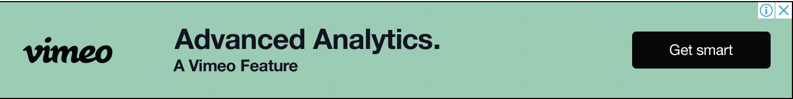

Hello. I am Lena The Programmer.
via GIPHY
Check this out!!!
Many thousands of anime and manga fans descended on the Toronto Congress Centre for Anime North, a fan-run convention launched in 1997. Spread between four venues over three days, May 24 to 26, the event featured J-pop maid idols, voice actors, writers, and more. Wikinews attended. Despite the ample indoor spaces, the parking lot of the Centre is also a hub of activity, with cosplayers posing for photos. Attendees were sent running for cover on Saturday, as heavy rains and a severe thunderstorm warning put a damper on festivities. The event is organized by a massive team of volunteers, and known for its specialized programming for fans, by fans. On the night of May 25, for example, attendees could catch "Pokemon Biology", "Kimono Obi Tying", and "Underappreciated Sports Anime/Manga." US voice actor Alexis Tipton marveled at the growth of the anime industry in the last decade. "Back when I was going as a fan, there wasn't as much anime, so it was easier to know about everything," Tipton observed during a question and answer session. "I'm so overwhelmed by how much there is."
Click me!
